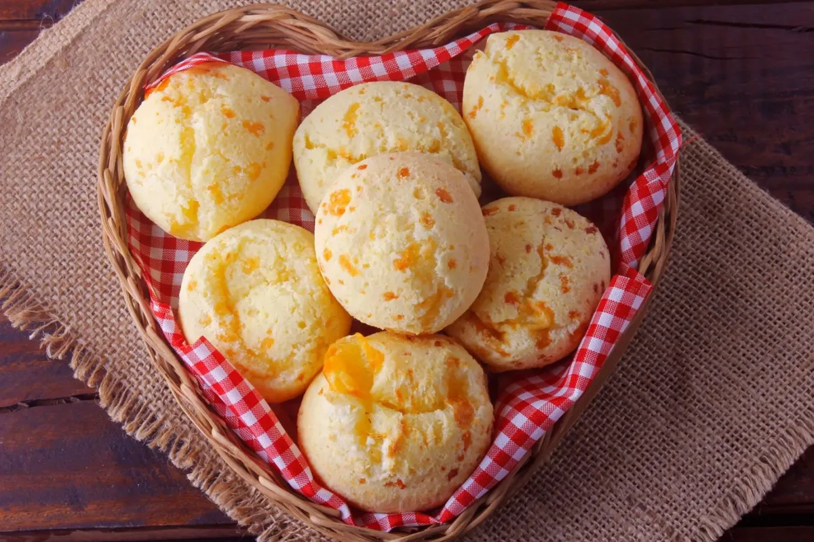

Receita em destaque
Lasanha à bolonhesa
Uma receita clássica para reunir a família em volta da mesa.
Ver receitaReceitas novas
 Doces e
sobremesas
Doces e
sobremesas
Bolo de cenoura com cobertura de chocolate
 Salgados
Salgados
Salpicão de frango

SalgadosPão de queijo
 Salgados
Salgados
Strogonoff de frango
Receitas por categoria
Doces e sobremesas4 receitasSalgados5 receitasReceitas rápidas1 receitasVegetarianas1 receitasAcompanhamentos3 receitas
Ceia de Natal
Rabanada, farofa, salpicão e frango assado para montar a mesa. Ver as receitas de Natal